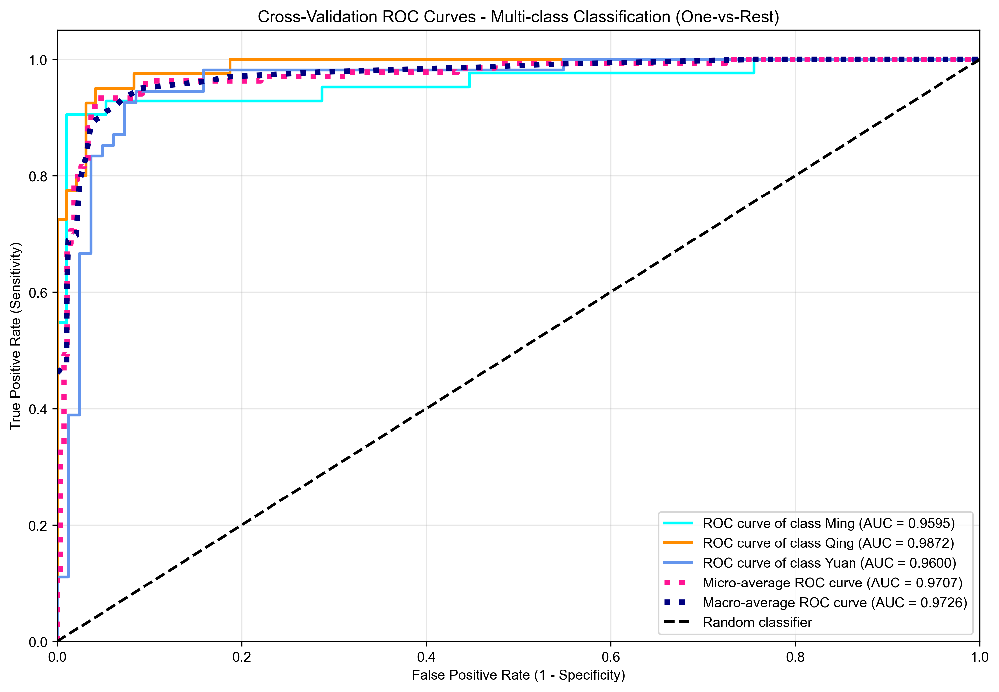

Comprehensive Analysis of Model Training Process
| Check Type | Status | Issues Found | Details |
|---|---|---|---|
| Feature Names | ✅ PASSED | 0 | No issues detected |
| Data Dimensions | ✅ PASSED | 0 | No issues detected |
| Target Variable | ✅ PASSED | 0 | No issues detected |
| Data Leakage | ❌ FAILED | 8 | High suspicion data leakage: 'Na2O' (correlation: 1.000); High suspicion data leakage: 'MgO' (correlation: 1.000); High suspicion data leakage: 'Al2O3' (correlation: 1.000); High suspicion data leakage: 'SiO2' (correlation: 1.000); High suspicion data leakage: 'K2O' (correlation: 1.000); High suspicion data leakage: 'CaO' (correlation: 1.000); High suspicion data leakage: 'TiO2' (correlation: 1.000); High suspicion data leakage: 'Fe2O3' (correlation: 1.000) |
| Sample Balance | ✅ PASSED | 0 | No issues detected |
| Feature Correlations | ✅ PASSED | 1 | Found 3 high feature correlations (threshold: 0.7) |
| Multicollinearity Detection | ❌ FAILED | 2 | Detected 9 features with high VIF (>= 5.0); Found 3 highly correlated feature pairs |
| Feature Distributions | ❌ FAILED | 28 | Feature 'Na2O' has extreme skewness (2.47); Feature 'Na2O' significantly deviates from normal distribution; Feature 'MgO' has extreme skewness (6.57); Feature 'MgO' has moderate outlier ratio (5.1%); Feature 'MgO' significantly deviates from normal distribution; Feature 'SiO2' significantly deviates from normal distribution; Feature 'K2O' significantly deviates from normal distribution; Feature 'CaO' significantly deviates from normal distribution; Feature 'TiO2' has moderate outlier ratio (7.4%); Feature 'TiO2' significantly deviates from normal distribution; Feature 'Fe2O3' is highly skewed (1.87); Feature 'Fe2O3' has moderate outlier ratio (5.1%); Feature 'Fe2O3' significantly deviates from normal distribution; Feature 'MnO' significantly deviates from normal distribution; Feature 'ZnO' has extreme skewness (3.54); Feature 'ZnO' has moderate outlier ratio (5.9%); Feature 'ZnO' significantly deviates from normal distribution; Feature 'PbO2' has moderate outlier ratio (5.9%); Feature 'PbO2' significantly deviates from normal distribution; Feature 'SrO' significantly deviates from normal distribution; Feature 'Y2O3' has extreme skewness (2.64); Feature 'Y2O3' has moderate outlier ratio (8.1%); Feature 'Y2O3' significantly deviates from normal distribution; Feature 'ZrO2' has extreme skewness (2.36); Feature 'ZrO2' significantly deviates from normal distribution; Feature 'P2O5' is highly skewed (1.30); Feature 'P2O5' significantly deviates from normal distribution; Feature 'As2O3' has severe class imbalance (ratio: 86.0) |

ROC Curves
Receiver Operating Characteristic curves for each class and fold
| Feature | Gain | Weight | Cover | Permutation Mean | Permutation Std |
|---|---|---|---|---|---|
| K2O | 4.1651 | 62 | 19.03 | 0.1471 | 0.0275 |
| MnO | 3.6134 | 85 | 17.25 | 0.1103 | 0.0104 |
| Rb2O | 3.3218 | 32 | 22.38 | -0.0029 | 0.0036 |
| CaO | 2.8202 | 45 | 20.73 | -0.0029 | 0.0036 |
| SrO | 1.5419 | 63 | 15.84 | 0.0074 | 0.0000 |
| ZrO2 | 1.5091 | 14 | 14.39 | 0.0000 | 0.0000 |
| P2O5 | 1.4758 | 47 | 13.21 | 0.0029 | 0.0036 |
| MgO | 1.3097 | 34 | 11.32 | 0.0059 | 0.0029 |
| PbO2 | 1.1612 | 21 | 13.65 | 0.0000 | 0.0047 |
| TiO2 | 1.0696 | 52 | 13.97 | 0.0074 | 0.0047 |
| As2O3 | 0.9447 | 6 | 12.98 | 0.0000 | 0.0000 |
| Y2O3 | 0.9385 | 34 | 12.76 | 0.0029 | 0.0036 |
| Fe2O3 | 0.8884 | 71 | 13.77 | 0.0088 | 0.0029 |
| SiO2 | 0.6608 | 23 | 13.38 | 0.0000 | 0.0000 |
| CuO | 0.6206 | 7 | 12.91 | 0.0074 | 0.0000 |
| Al2O3 | 0.6092 | 26 | 11.78 | 0.0044 | 0.0036 |
| Na2O | 0.4895 | 20 | 13.53 | 0.0000 | 0.0000 |
| ZnO | 0.4674 | 18 | 11.02 | -0.0015 | 0.0029 |